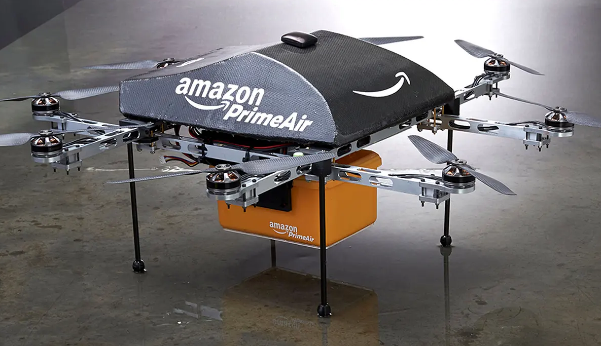
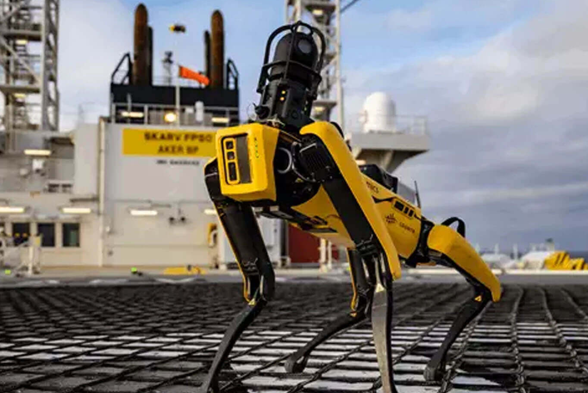
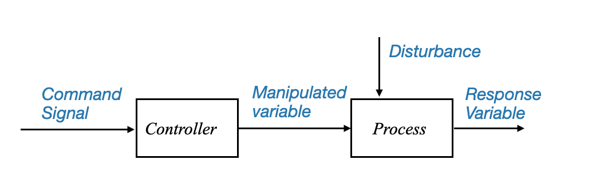
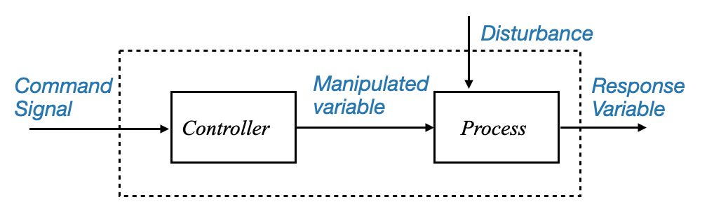
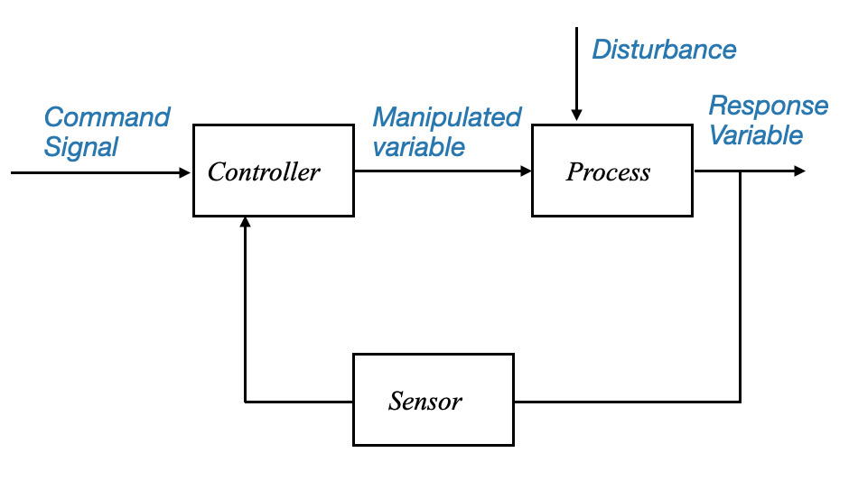
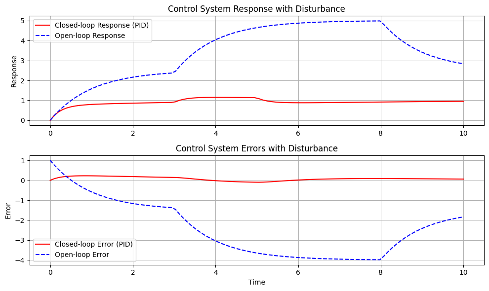

import numpy as np
import matplotlib.pyplot as plt
from scipy.integrate import odeintPrincipi di controllo automatico
Benvenuti al corso sui Principi del Controllo Automatico. In questa serie di quaderni Jupyter interattivi discuteremo i principi fondamentali, i concetti e le terminologie utilizzate nel campo dell’ingegneria dei controlli.
Introduzione ai sistemi di controllo
L’ingegneria di controllo o l’ingegneria dei sistemi di controllo si occupa della progettazione di sistemi in modo che si comportino nel modo desiderato. Oggi i sistemi di controllo sono parte integrante della nostra vita quotidiana e hanno una vasta gamma di applicazioni.
Terminologia del sistema di controllo
Nelle nostre discussioni iniziali, ci concentreremo sulle terminologie utilizzate nei sistemi di controllo. È fondamentale acquisire familiarità con questi termini per avere una chiara comprensione degli argomenti successivi.
Cominciamo!
Il ruolo dei sistemi di controllo nella tecnologia moderna
I sistemi di controllo svolgono un ruolo chiave nello sviluppo della civiltà e della tecnologia moderne. Gli esempi abbondano nella vita quotidiana:
- Elettrodomestici: sistemi di riscaldamento domestico, frigoriferi, condizionatori d’aria, automobili.
- Applicazioni industriali: controllo delle scorte, linee di assemblaggio automatiche, controllo di macchine utensili.
- Tecnologia avanzata: tecnologia spaziale, sistemi d’arma, robotica, centrali elettriche.
Questi sistemi garantiscono operazioni efficienti, affidabili e sicure in vari settori.
|  |  |
La teoria del controllo del feedback, su cui ci concentreremo in questo corso, viene utilizzata anche nel controllo delle scorte e nei sistemi socioeconomici.
Mentre il nostro focus principale sarà sui sistemi ingegneristici, dove il sistema da controllare obbedisce a leggi fisiche specifiche.
È essenziale notare che il sistema di controllo può essere applicato anche a sistemi socio-economici e biologici (cibernetica), ma non ne parleremo in questo corso.
Contesto storico ed evoluzione
L’applicazione delle tecniche di controllo iniziò principalmente nel controllo di processo all’inizio del XX secolo (1900-1940). La seconda guerra mondiale accelerò lo sviluppo dei sistemi di controllo con l’avvento dei piloti automatici di aerei, dei sistemi di posizionamento delle armi, dei radar e dei sistemi di controllo delle antenne.
Questo periodo segnò la nascita dei servomeccanismi, derivati da “servo” (che significa schiavo o servitore) e “meccanismo”, che indica un sistema che risponde ai comandi. Questa convergenza di discipline ha portato alla teoria del controllo del feedback unificato che studiamo oggi.
Terminologie di base dei sistemi di controllo
Prima di andare avanti, definiamo alcune delle terminologie di base utilizzate nei sistemi di controllo:
1. Il Processo o Impianto o Sistema Controllato
- Definizione: Il sistema che viene controllato. Può trattarsi di qualsiasi sistema, macchina o processo che necessita di controllo automatizzato.
- Esempi in settori: prodotti chimici, petrolio, energia a vapore, ecc., dove è richiesto il controllo di temperatura, pressione, livello del liquido, umidità e composizione. Queste applicazioni vengono spesso definite “applicazioni di controllo del processo”.
2. Risposta o variabile controllata
- Definizione: L’output o la variabile del processo che intendiamo controllare.
- Esempio: Temperatura in un impianto di riscaldamento.
3. Variabile manipolata
- Definizione: La variabile regolata dal controller per influenzare la variabile di risposta.
- Esempio: La posizione della valvola in un impianto di riscaldamento per regolare il flusso di calore.
4. Controllore
- Ruolo: regolare la variabile manipolata per garantire che la variabile controllata segua i comandi impostati.
5. Disturbo
- Caratteristiche: un segnale indesiderato, incontrollabile, spesso casuale che influenza il processo. Questo segnale è fuori dal nostro controllo.
- Fonti: fattori ambientali esterni o cambiamenti dei processi interni.
- Esempio: Oscillazioni della temperatura ambiente che interessano un impianto di riscaldamento (esterno); I parametri cambiano nel tempo (interni)
Rappresentazione del diagramma a blocchi
Per comprendere come funziona un sistema di controllo di base, è utile utilizzare una rappresentazione in diagramma a blocchi.
|  |
oppure possiamo anche vedere il segnale di comando arrivare a un singolo blocco, che produce la variabile di risposta:
|  |
Figura: diagramma a blocchi che rappresenta la struttura del sistema di controllo di base e i suoi componenti e segnali principali.
Si noti che sebbene il disturbo sia visualizzato come un segnale proveniente dall’esterno, potrebbe trattarsi di una modifica interna (ad esempio, modifica di un parametro).
Quest’ultimo diagramma a blocchi mostra che il nostro obiettivo è avere una variabile di risposta che segua i comandi impostati. Vediamo ora come raggiungere questo obiettivo.
Sistema di controllo ad anello aperto
- Struttura: Il controller riceve il segnale di comando e regola di conseguenza la variabile manipolata, indipendentemente da eventuali disturbi.
- Limitazione: Mancanza di feedback; il sistema non si adatta a disturbi o cambiamenti nel processo.
Tuttavia, un tale sistema può essere vulnerabile ai disturbi. Se un disturbo casuale colpisce il sistema e il controller non è a conoscenza di questo cambiamento, potrebbe non riuscire a far sì che la variabile di risposta segua il comando.
Sistema di controllo a circuito chiuso
Per affrontare questo problema, viene utilizzato un sistema più intelligente, noto come sistema di “controllo a circuito chiuso”. Qui, il controller riceve feedback dalla variabile di risposta, consentendogli di regolare la variabile manipolata in tempo reale e garantendo che l’uscita segua da vicino il comando, anche quando si verificano disturbi.
L’intelligenza dei sistemi a circuito chiuso
Il sistema a circuito chiuso monitora continuamente il processo che controlla e apporta modifiche in tempo reale per mantenere le cose senza intoppi. Ecco come funziona:
- Meccanismo di feedback: il controllore in un sistema a circuito chiuso è costantemente informato sullo stato attuale del processo (la variabile di risposta). Questo flusso continuo di feedback è il modo in cui il sistema tiene il dito sul polso.
- Regolazione dinamica: sulla base di questo feedback, il controller apporta modifiche immediate alla variabile manipolata, il componente del sistema che influenza direttamente l’uscita.
Affrontare i disturbi
In uno scenario ideale, se potessimo prevedere ogni disturbo, potremmo adattare preventivamente i nostri sistemi per contrastarli. Ma in realtà i disturbi sono spesso casuali e imprevedibili. È qui che entra in gioco la capacità di misurazione e reazione del sistema a circuito chiuso:
- Quando un disturbo colpisce il processo, questo impatto si riflette nella variabile di risposta.
- Misurando questa variabile il sistema raccoglie indirettamente informazioni sul disturbo.
- Il controller confronta quindi l’uscita effettiva (variabile controllata) con l’uscita prevista (segnale di comando) e identifica eventuali discrepanze.
- Questo confronto produce un segnale di errore, che il controller utilizza per generare un segnale di controllo correttivo. Questo segnale viene reimmesso nel processo, riducendo l’errore verso zero.
I sistemi di controllo del feedback sono fondamentali in vari settori grazie alla loro capacità di minimizzare gli errori. Funzionano secondo un principio semplice ma efficace: utilizzare il feedback per ridurre il divario tra ciò che si desidera (il segnale di comando) e ciò che sta effettivamente accadendo (il risultato effettivo).
Componenti di un sistema di controllo a circuito chiuso
- Sensore: Questo componente misura la variabile controllata, rilevando effettivamente la temperatura del sistema.
- Comparatore: Agendo come giudice, confronta le letture del sensore con il segnale di comando desiderato.
- Controller: in base ai risultati del comparatore, il controller altera la variabile manipolata per correggere eventuali errori.
|  |
Diagramma: diagramma a blocchi che rappresenta il sistema di controllo a circuito chiuso. La struttura illustra il feedback dalla variabile di risposta al controller.
Struttura dei sistemi di controllo del feedback
Il meccanismo di un sistema di controllo del feedback è un processo di autoannullamento dell’errore.
Il sistema verifica continuamente la presenza di discrepanze tra il comando desiderato e l’output effettivo, impiegando azioni del controller per mitigare questi errori. Un sistema di questo tipo è comunemente noto come sistema a circuito chiuso a causa della sua struttura ad anello, che facilita il processo di feedback.
I componenti di questo sistema possono essere intesi come segue:
- Segnale di comando: l’uscita o il setpoint desiderato.
- Variabile controllata: l’output effettivo del sistema.
- Segnale di errore: differenza tra il segnale di comando e la variabile controllata.
- Controller: elabora il segnale di errore per produrre il segnale di controllo.
- Impianto: L’effettivo sistema controllato.
- Sensore: misura la potenza dell’impianto
Sfide nel sistema di controllo del feedback
Nonostante la loro efficacia, i sistemi a circuito chiuso presentano sfide specifiche:
Rumore del sensore: Una delle principali fonti di problemi nel sistema di controllo del feedback è il sensore. L’inclusione del sensore, assente nei sistemi a circuito aperto, presenta una serie di problemi:
Rumore: Il sensore potrebbe introdurre rumore, soprattutto alle alte frequenze, durante la misurazione. Questo rumore può disturbare il corretto funzionamento dell’impianto e del controllore, riducendo così l’efficienza del sistema.
Soluzioni al rumore: l’installazione di filtri antirumore adeguati può risolvere questo problema, garantendo che il rumore ad alta frequenza non interferisca con il funzionamento del circuito.
Requisiti del controller: Un aspetto significativo del sistema di feedback è il suo controllore.
Lo scopo primario del titolare del trattamento è rendere robusto il sistema. Un sistema robusto implica che la variabile controllata segua fedelmente il segnale di comando, anche in presenza di disturbi esterni o variazioni dei parametri dell’impianto. Per raggiungere questo obiettivo è necessario un attento equilibrio tra accuratezza e stabilità del sistema, un delicato compromesso che costituisce il nucleo della teoria del controllo del feedback.
L’obiettivo è che la variabile controllata segua il comando. Ciò significa che il controllore in un sistema a circuito chiuso dovrebbe raggiungere:
- Precisione allo stato stazionario: riduzione al minimo dell’errore a lungo termine tra la variabile controllata e il segnale di comando.
- Velocità di risposta: Rispondere rapidamente ai cambiamenti nel comando o ai disturbi.
Preoccupazioni sulla stabilità (compromesso tra accuratezza e stabilità):
- Poiché ci impegniamo per una maggiore precisione del sistema, la stabilità potrebbe essere compromessa. Questo compromesso è una sfida intrinseca della struttura del feedback. La teoria del controllo del feedback e i suoi progetti mirano a trovare un equilibrio tra questi requisiti contrastanti.
Vantaggi del controllo del feedback
I sistemi di controllo del feedback sono indispensabili, principalmente a causa della loro natura robusta. Nonostante le sfide associate, la loro capacità di filtrare i disturbi e adattarsi alle variazioni dei parametri li rende superiori ai sistemi a circuito aperto. Senza strutture di controllo del feedback, sarebbe difficile ottenere in modo efficace la precisione del sistema.
Esempio
def open_loop_system(y, t, K, tau):
"""Open-loop system model."""
u = 1 # step input
if 3 <= t <= 8: # Adding a disturbance between time 3 and 5
u += 1.0
dydt = (-y + K * u) / tau
return dydt
def closed_loop_system(states, t, K, tau, Ki, Kd):
"""Closed-loop system model with PID control."""
y, e_prev, e_int = states # y is system output, e_prev is previous error, e_int is integral of error
setpoint = 1 # desired setpoint
disturbance = 0
if 3 <= t <= 5: # Adding a disturbance between time 3 and 5
disturbance += 1.0
# Error
e = setpoint - y
# PID Controller
u = K * e + Ki * e_int + Kd * (e - e_prev)
dydt = (-y + u + disturbance) / tau # Disturbance is added directly to the system dynamics
deintdt = e # Integral of error over time
dedt = e - e_prev
return [dydt, dedt, deintdt]
# System parameters
K = 2.5
tau = 1.0
Ki = 1.0 # Integral gain
Kd = 0.5 # Derivative gain
# Time array
t = np.linspace(0, 10, 100)
# Solve ODE for the open-loop system
y_open = odeint(open_loop_system, 0, t, args=(K, tau))
error_open = 1 - y_open.squeeze() # desired setpoint is 1, so error is 1 - output
# Solve ODE for the closed-loop system
initial_conditions = [0, 0, 0] # initial values for y, e_prev, and e_int
y_closed, error_closed, _ = odeint(closed_loop_system, initial_conditions, t, args=(K, tau, Ki, Kd)).T
# Plot Responses
plt.figure(figsize=(10,6))
plt.subplot(2, 1, 1)
plt.plot(t, y_closed, 'r-', label='Closed-loop Response (PID)')
plt.plot(t, y_open, 'b--', label='Open-loop Response')
plt.ylabel('Response')
plt.title('Control System Response with Disturbance')
plt.legend()
plt.grid()
# Plot Errors
plt.subplot(2, 1, 2)
plt.plot(t, error_closed, 'r-', label='Closed-loop Error (PID)')
plt.plot(t, error_open, 'b--', label='Open-loop Error')
plt.xlabel('Time')
plt.ylabel('Error')
plt.title('Control System Errors with Disturbance')
plt.legend()
plt.grid()
plt.tight_layout()
plt.show()
Il sistema che stiamo simulando è un sistema base del primo ordine. È uno dei sistemi dinamici più semplici, utilizzato spesso come elemento fondamentale nella teoria del controllo. Le equazioni che governano la sua dinamica, in generale, assomigliano a:
\[ \tau \frac{dy(t)}{dt} + y(t) = Ku(t) \]
Qui: - \(\tau\) è la costante di tempo del sistema. Dà un’idea della velocità con cui il sistema risponde ai cambiamenti nell’input. - \(K\) è il guadagno del sistema. Ti dice quanto cambia l’output del sistema per una determinata modifica nell’input. - \(u(t)\) è l’input del sistema al tempo \(t\). - \(y(t)\) è l’output del sistema al tempo \(t\).
Il sistema ad anello aperto agisce direttamente sul sistema con l’ingresso \(u(t)\). Non c’è feedback, quindi se c’è un disturbo o il sistema non si comporta come previsto, il sistema a circuito aperto non può correggerlo.
Il sistema a circuito chiuso, invece, utilizza il feedback. L’uscita del sistema \(y(t)\) viene costantemente misurata e confrontata con il setpoint desiderato per determinare l’errore. Un controller regola quindi l’ingresso del sistema \(u(t)\) in base a questo errore per far sì che l’uscita del sistema corrisponda al setpoint desiderato. Ciò consente al sistema a circuito chiuso di correggere i disturbi e il comportamento del sistema che si discosta dal comportamento desiderato.
Nella nostra simulazione specifica: - Il sistema ad anello aperto è stato modellato per mostrare come reagisce direttamente a un input e ad un disturbo senza alcun meccanismo di feedback. - Il sistema a circuito chiuso è stato modellato utilizzando un semplice controllore proporzionale con un termine derivativo. Il controller cerca di minimizzare l’errore, che è la differenza tra l’uscita desiderata (setpoint + disturbo) e l’uscita effettiva del sistema. Ciò consente al sistema a circuito chiuso di correggere eventuali disturbi o altri comportamenti imprevisti.
Con questo meccanismo di feedback, il controller può regolare e correggere dinamicamente eventuali deviazioni, garantendo che il sistema rimanga stabile e funzioni come desiderato.
Approcci progettuali per sistemi di controllo feedback
Progettare un controller efficace è fondamentale. Esistono vari approcci a questo proposito e possono essere classificati come segue:
- Approccio sperimentale (ottimizzazione del controller):
- Metodo: regolazione del controller in base all’esperienza pratica e al feedback in tempo reale. Viene installato un controller basato sulle esperienze passate e quindi regolato in tempo reale fino al raggiungimento dei risultati desiderati.
- Caso d’uso: comunemente utilizzato nel controllo di processo in cui è difficile ottenere modelli di processo accurati o molto complessi (ad esempio, impianti altamente non lineari).
- Natura: è un approccio ad hoc, che si basa più sulla conoscenza empirica che sui modelli teorici.
- Approccio basato su modelli (approccio analitico):
- Metodo: Sviluppo di un modello matematico del sistema (equazioni differenziali, funzioni di trasferimento, modelli delle variabili di stato) e progettazione del controllore basato su questo modello.
- Caso d’uso: questo è un metodo utilizzato per sistemi complessi in cui i requisiti di controllo sono rigorosi, un approccio basato su modello è più adatto. Qui la dinamica del sistema viene catturata in un modello matematico, che viene poi utilizzato per progettare analiticamente il controller.
- Vantaggio: Fornisce un controllo più preciso, soprattutto per i sistemi complessi.
- Approccio basato sulla conoscenza o sui dati:
- Tendenze recenti: include metodi come controllo esperto, controllo fuzzy, reti neurali e apprendimento per rinforzo. L’idea centrale è quella di utilizzare linee guida qualitative o regole derivate dalla conoscenza degli esperti (un utente esperto o dati) per progettare il controller.
- Applicazione: Sempre più popolare nelle applicazioni industriali.
Nell’ambito di questo corso, ci concentreremo principalmente sul controllo basato su modello. Ciò comporta la derivazione di un modello matematico del sistema fisico, che può essere basato su leggi fisiche o sperimentazione.
Approccio
Per un sistema fisico otterremo un modello metematico. Questo può essere derivato:
Utilizzo delle leggi fisiche: derivazione di equazioni differenziali basate sui principi fisici che governano il sistema, che possono poi essere tradotte in una rappresentazione più conveniente, ad esempio funzioni di trasferimento o variabili dello spazio degli stati.
Esecuzione di sperimentazioni: condurre esperimenti per determinare le relazioni input-output e modellarle utilizzando forme matematiche adeguate, ad esempio funzioni di trasferimento. Questa si chiama identificazione del sistema.
Contesto storico:
L’evoluzione dei metodi di progettazione del controllo può essere sostanzialmente classificata in due epoche principali:
Progettazione classica dei controlli (1940-1960): questo periodo ha visto lo sviluppo di metodi di progettazione nel dominio della frequenza. Sono emerse tecniche come i metodi di stabilità di Nyquist, i grafici di Bode e i grafici del luogo delle radici. Sono ancora molto utilizzati, soprattutto nelle applicazioni di controllo industriale (sviluppo di servomeccanismi).
Modern Control Design (dagli anni ’60 in poi): i requisiti di controllo dei veicoli spaziali hanno dato vita a tecniche di stato-spazio, note come Modern Control Design. Sebbene questi metodi siano definiti “moderni”, è fondamentale comprendere che sia i metodi classici che quelli moderni sono ancora prevalenti e fondamentali nelle rispettive applicazioni.
Il termine “progettazione di controlli moderna” potrebbe essere un po’ fuorviante. È emerso principalmente dai requisiti specifici del tracciamento nei veicoli spaziali. Tuttavia, nel campo del controllo industriale, i metodi classici di progettazione sono ancora ampiamente prevalenti. Infatti, circa il 75% degli odierni problemi di controllo industriale vengono affrontati utilizzando queste tecniche classiche.
Sebbene i metodi moderni abbiano le loro origini e vantaggi, in particolare in applicazioni specializzate come i veicoli spaziali, è ancora discutibile quale metodo offra maggiore robustezza. La robustezza, dopo tutto, è il requisito primario per la maggior parte dei sistemi.
Questo dibattito in corso rende imperativo rinunciare alla terminologia del controllo classico e moderno, poiché entrambi sono ugualmente rilevanti a seconda dell’applicazione.
Nell’ambito di questo corso, la nostra concentrazione principale sarà sui metodi di progettazione nel dominio della frequenza. Ciò ti fornirà una comprensione completa dei metodi fondamentali nella progettazione dei controlli.
Tuttavia, non trascureremo del tutto i metodi delle variabili di stato. Verranno invece introdotti non dal punto di vista della progettazione ma piuttosto per la simulazione del sistema. La simulazione del sistema, se affrontata attraverso la formulazione delle variabili di stato, può essere più intuitiva ed efficace.
Esempi illustrativi di sistemi di controllo
Spesso è utile mettere in relazione i concetti teorici con esempi del mondo reale. Ciò aiuta a comprendere le applicazioni più ampie e le sfumature dei sistemi di controllo nella vita di tutti i giorni.
Esempi di sistemi controllati:
- Serbatoio del WC del bagno: un sistema apparentemente semplice, ma in sostanza è un meccanismo di controllo a feedback.
- Guida automobilistica: comprende vari sistemi di controllo, dalla regolazione della velocità al servosterzo.
- Riscaldamento residenziale: i termostati e i sistemi HVAC si affidano al feedback per mantenere le temperature desiderate.
- Meccanismo di sterzo idraulico: un componente critico per molti veicoli e sistemi pesanti.
- Servosistema antenna: utilizzato per il monitoraggio e le comunicazioni.
- Sistema di controllo della velocità: presente in varie macchine, dalle installazioni industriali agli elettrodomestici.
Approfondiremo ulteriormente questi esempi, inquadrandoli nel contesto dei sistemi di controllo del feedback. In tal modo, miriamo a fornire una comprensione più profonda di come questi principi vengono applicati in scenari pratici.
|
|
|
|
Dove entra in gioco l’ingegneria dei sistemi di controllo?
- Controllo dell’atteggiamento
- Controllo dell’atterraggio
- Monitoraggio della traiettoria
- Controllo del territorio (ad esempio, tracciamento dell’antenna)
|
|
|
|
Conclusioni
I sistemi di controllo del feedback costituiscono la spina dorsale di molte applicazioni ingegneristiche moderne. La capacità di fornire un meccanismo per regolare automaticamente il comportamento del sistema in base al feedback degli output rende questi sistemi indispensabili. Tuttavia, la progettazione e l’implementazione di questi sistemi richiedono una comprensione completa della loro struttura, delle sfide, dei vantaggi e dei vari approcci disponibili. Nei capitoli successivi approfondiremo ciascuno di questi aspetti, fornendo uno sguardo più dettagliato alle complessità dei sistemi di controllo del feedback.